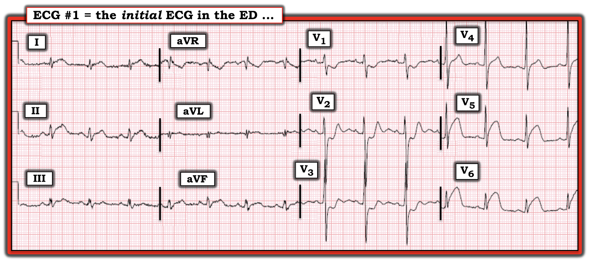
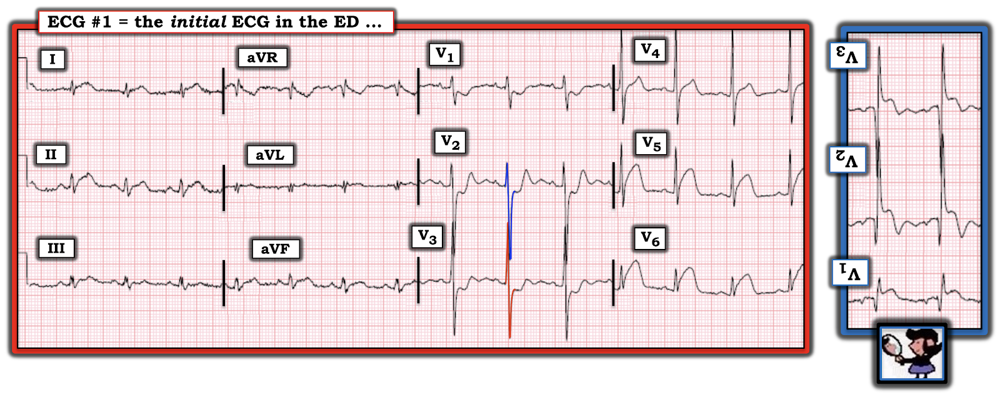
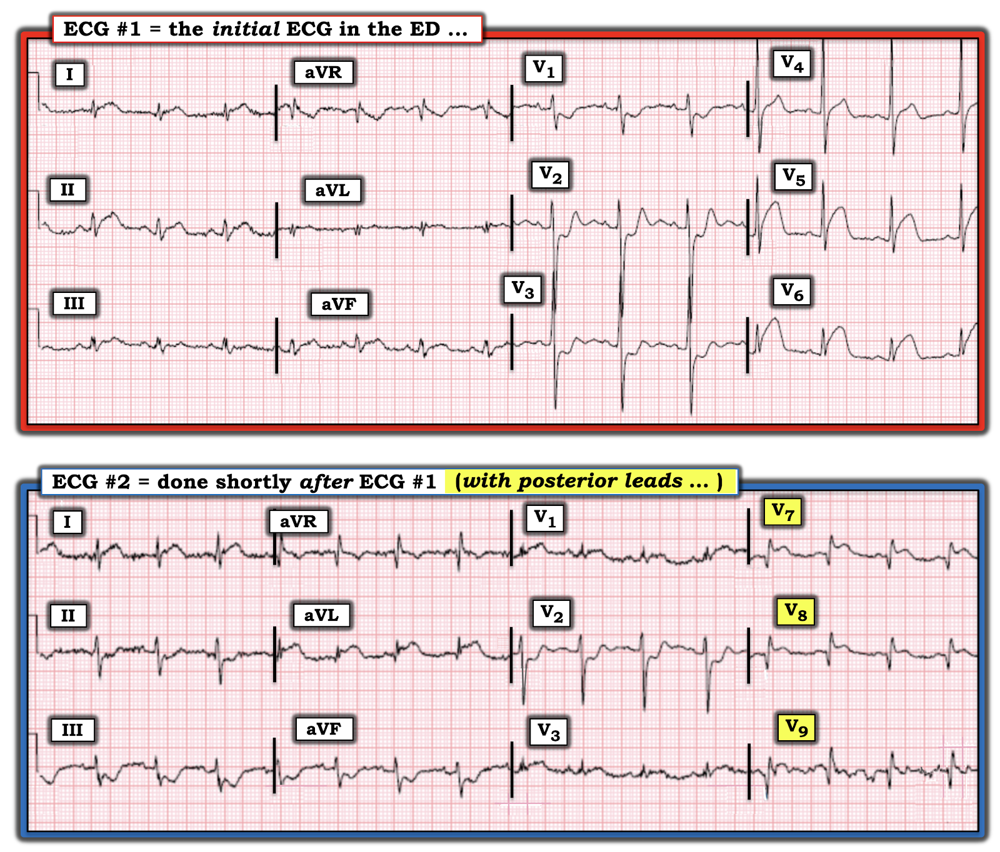
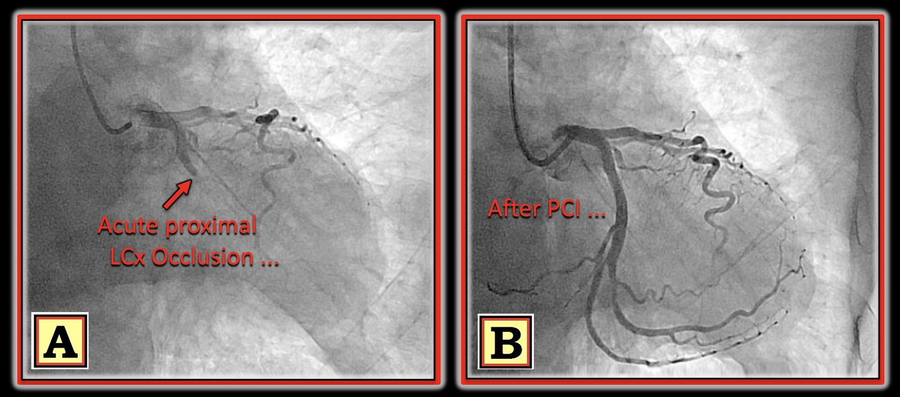
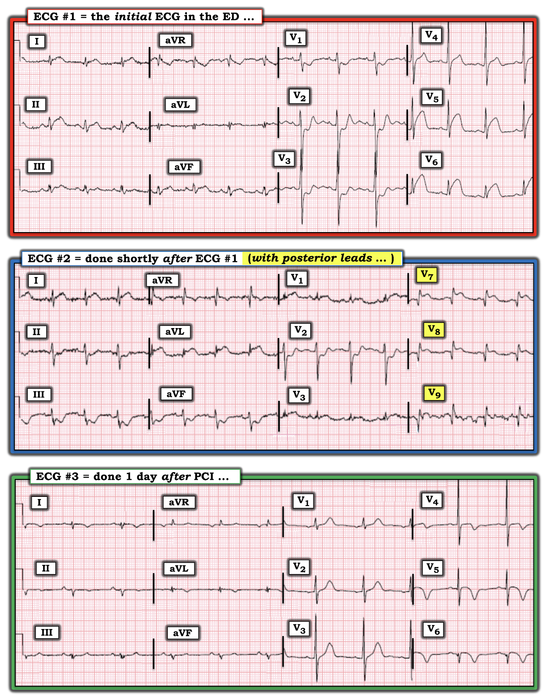

ECG Blog #317 — Nam 80 tuổi, đau ngực – Động mạch thủ phạm?
Điện tâm đồ ở Hình-1 — được ghi ở một người đàn ông 80 tuổi đến ED (khoa Cấp cứu – Emergency Department) vì đau ngực mới khởi phát.
- BẠN sẽ đọc điện tâm đồ ở Hình-1 như thế nào?
- Có động mạch "thủ phạm" (culprit) nào không?


SUY NGHĨ CỦA TÔI về điện tâm đồ ở Hình-1:
Hiển nhiên — điện tâm đồ #1 cho thấy một STEMI cấp, dựa vào ST chênh lên "đập vào mắt" ở chuyển đạo V5,V6. Dù vậy — có dấu hiệu bất thường ở hầu như mọi chuyển đạo! Tuy nhiên, tôi thấy phần thú vị nhất của ca hôm nay là suy ngẫm câu trả lời cho Câu hỏi thứ 2 của tôi — tức là dự đoán động mạch “thủ phạm”.
- Có nhiều nhiễu (artifact) đường nền trên điện tâm đồ ban đầu này, nhất là ở các chuyển đạo chi. Dù vậy — chúng ta vẫn có thể đọc chính xác bản ghi này.
- Nhịp ở điện tâm đồ #1 có vẻ là nhịp xoang khá đều, tần số ~85/phút. Mọi khoảng (PR, QRS, QTc) đều bình thường.
- Trục QRS mặt phẳng trán bình thường, ở +60 độ.
- Không có lớn buồng tim.
ĐIỂM THEN CHỐT (PEARL) #1: BẠN có nhận thấy Điện thế thấp (low voltage) ở các chuyển đạo chi không? (tức là phức bộ QRS không vượt quá 5 mm ở bất kỳ chuyển đạo nào trong 6 chuyển đạo chi).
- Khi cân nhắc chẩn đoán nhồi máu cấp hoặc mới xảy ra — cần nhớ rằng "choáng váng" cơ tim (myocardial stunning) do một MI lớn là một trong các nguyên nhân gây điện thế thấp cấp tính (Xem thêm về chủ đề này ở ECG Blog #262 và ECG Blog #272).
Về Thay đổi Q-R-S-T:
- Tôi không chắc phức bộ QRS nhỏ, phân mảnh ở chuyển đạo aVL có bắt đầu bằng một sóng q nhỏ hay không. Ngoài ra, tôi không thấy dấu hiệu sóng Q ở các chuyển đạo khác.
- Tăng tiến sóng R (R wave progression) phù hợp — với vùng chuyển tiếp (nơi sóng R trở nên cao hơn độ sâu của sóng S) xuất hiện bình thường giữa V2 và V3. Đáng chú ý — sóng R ở chuyển đạo V3 cao một cách bất ngờ (tức ~19 mm). Điều này có ý nghĩa trong ca hôm nay, nhưng dễ bị bỏ sót vì chồng lấn với sóng S rất sâu ở chuyển đạo V2 (Xem đường viền ĐỎ và XANH của các phức bộ QRS ở những chuyển đạo này trong Hình-2).
Những dấu hiệu nổi bật nhất ở điện tâm đồ #1 liên quan đến Thay đổi ST-sóng T:
- Như đã nói — có ST chênh lên dạng vòm (coving) "đập vào mắt" ở các chuyển đạo trước tim bên V5 và V6.
- ĐIỂM THEN CHỐT (PEARL) #2: Cũng có ST chênh lên ở chuyển đạo V4. Dù mức độ rất ít — chúng ta biết điều này là thật vì: i) Theo nguyên tắc "chuyển đạo lân cận" — chúng ta biết có ST chênh lên rõ rệt ở chuyển đạo V5 kề bên, và hình dạng vòm của đoạn ST ở V4 tương tự như ở V5; và, ii) Có ST chênh xuống ở chuyển đạo V3 nằm cạnh V4 — nên ngay cả mức ST chênh lên nhỏ tại điểm J thấy ở V4 chắc chắn là thật.
- Có ST chênh lên kín đáo nhưng thật ở 3 chuyển đạo chi. Có lẽ thấy rõ nhất ở chuyển đạo I — nhưng cũng có ở chuyển đạo II và aVF (dù không có ở III và aVL).
- ĐIỂM THEN CHỐT (PEARL) #3: Hãy để ý nhiễu làm phức tạp việc đánh giá thay đổi ST-T ở các chuyển đạo chi như thế nào! Chẳng hạn — hình dạng của ST-T thay đổi từ 1 nhát sang nhát kế tiếp ở mỗi phức bộ trong 3 phức bộ ở các chuyển đạo I,II,III và aVF. Có những phức bộ rõ ràng trông đáng lo hơn những phức bộ khác! Khi hiện tượng nhiễu thường gặp này xảy ra — tôi ưa dùng cách tiếp cận "tổng thể" (Gestalt) — trong đó bạn nhìn "bức tranh chung", và chấp nhận rằng thông tin của chúng ta không hoàn hảo. Ở Hình-2 — "cái nhìn tổng thể" của tôi là có ST chênh lên kín đáo nhưng thật ở chuyển đạo I, II và aVF.
- Cuối cùng — có ST chênh xuống rõ rệt ở các chuyển đạo trước V1,V2,V3. Hãy để ý hình ảnh đoạn ST dạng bậc thềm (phẳng) ở V2 và V3 — với phần cuối dương ở những chuyển đạo này! Hình ảnh này cho kết quả “Nghiệm pháp soi gương” (Mirror Test) dương tính — mà trong bối cảnh đau ngực mới xuất hiện ở bệnh nhân của ca hôm nay, là chẩn đoán MI thành sau cấp (Xem Hình-2).


BẠN thấy gì ở điện tâm đồ-2?
Ngay sau khi ghi điện tâm đồ #1 — điện tâm đồ được ghi lại với các chuyển đạo thành sau (tức chuyển đạo V7,V8,V9) thay cho các chuyển đạo V4,V5,V6 (Xem Hình-3).
CÂU HỎI:
- Có cần các chuyển đạo thành sau để chẩn đoán MI thành sau cấp không?
- Điểm cộng: Dấu hiệu hữu ích nhất ở điện tâm đồ ghi lại được trình bày trong Hình-2 là gì?


ĐIỂM THEN CHỐT (PEARL) #4: Các chuyển đạo thành sau là không cần thiết ...
Theo kinh nghiệm của tôi qua nhiều năm kể từ 1983 (khi tôi lần đầu công bố về giá trị của Nghiệm pháp soi gương trong nhận biết MI thành sau cấp) — tôi chưa bao giờ thấy một ví dụ nào về điện tâm đồ mà MI thành sau cấp được chẩn đoán bằng các chuyển đạo thành sau lại không hiển nhiên sẵn trên 12 chuyển đạo chuẩn khi dùng Nghiệm pháp soi gương.
- Biên độ QRST ở các chuyển đạo thành sau bị giảm so với biên độ ở hình soi gương của các chuyển đạo trước — vì hoạt động điện ghi từ các điện cực V7,V8,V9 đặt phía sau phải đi qua lớp cơ lưng dày trước khi các điện cực này thu được hoạt động điện của tim.
- Chẳng phải hình soi gương bên phải điện tâm đồ #1 ở Hình-2 thuyết phục hơn so với mức lệch ST ít hơn thấy ở chuyển đạo V8 và V9 của Hình-3 sao?
- LƯU Ý: Tôi không phản đối những ai muốn ghi thêm các chuyển đạo thành sau vì họ thấy điều đó giúp ích cho việc đọc. Tôi chỉ muốn nói rằng chỉ cần luyện tập chút ít với Nghiệm pháp soi gương — là thu được thông tin tương đương nhanh hơn mà không cần gắn thêm chuyển đạo. (Thực ra — còn thu được nhiều thông tin hơn — vì có những lúc Nghiệm pháp soi gương dương tính dù các chuyển đạo thành sau âm tính).
Hãy NHÌN Lại: Trong ca hôm nay, điện tâm đồ #2 giúp ích như thế nào?
Đáng tiếc — điện tâm đồ thứ 2 của ca hôm nay đã thay các chuyển đạo V4,V5,V6 bằng V7,V8,V9. Tôi sẽ quan tâm hơn nếu được thấy diễn tiến ở các chuyển đạo V4,V5,V6 so với điện tâm đồ #1 (thay vì thấy các chuyển đạo V7,V8,V9 vốn không cung cấp thông tin mới).
- NHƯNG — Biết rằng điện tâm đồ #2 được ghi ngay sau điện tâm đồ #1 là điều quan trọng — vì giờ đây ST chênh lên tăng ở chuyển đạo I — ST chênh lên mới (và rõ rệt) ở chuyển đạo aVL — và ST chênh xuống soi gương mới (và rõ rệt) ở từng chuyển đạo thành dưới.
- Tổng hợp lại: Với bệnh sử đau ngực mới xuất hiện kèm các thay đổi liên tiếp thấy ở điện tâm đồ #1 và điện tâm đồ #2 — đây là một STEMI sau-bên cấp diện rộng đang tiến triển. Như đã bàn trong ECG Blog #193 — kiểu phân bố này gợi ý mạnh động mạch "thủ phạm" là LCx ưu thế (động mạch mũ trái – Left Circumflex).
DIỄN TIẾN của ca bệnh:
Thông tim xác nhận nhận định điện tâm đồ ở trên — cho thấy tắc cấp LCx đoạn gần (như trong Ô A của Hình-4).
- Ô B ở Hình-4 cho thấy kết quả PCI thành công — tái lập tưới máu ở mạch "thủ phạm".


CÂU HỎI Cuối cùng:
- Dựa trên điện tâm đồ #1 và #2 — BẠN sẽ đọc điện tâm đồ #3, ghi vào ngày sau khi nhập viện, như thế nào? (Hình-5).
- THỬ THÁCH: Bạn nhận ra được BAO NHIÊU thay đổi có ý nghĩa ở điện tâm đồ #3?


Suy nghĩ cuối cùng về 3 điện tâm đồ liên tiếp:
Có một số dấu hiệu thú vị ở điện tâm đồ #3, ghi vào ngày hôm sau. Tốt nhất nên đánh giá những thay đổi này trong bối cảnh điện tâm đồ #1 và #2, cả hai đều được ghi trước PCI (Hình-5):
- Điện tâm đồ #3 cho thấy những thay đổi tiến triển rõ rệt của STEMI sau-bên diện rộng, giờ đây có sóng T tái tưới máu ở các chuyển đạo bên (tức ở chuyển đạo I,aVL; và ở V4,V5,V6).
- Có mất biên độ QRS rõ rệt ở từng chuyển đạo chi (so với biên độ chuyển đạo chi vốn đã giảm thấy ở điện tâm đồ #1 và #2). Điều này phù hợp với việc dường như đã mất một lượng cơ tim đáng kể do nhồi máu diện rộng này.
- Ở chuyển đạo V6 của điện tâm đồ #3 không còn sóng R nào cả! Giả sử đây không phải do đặt sai vị trí điện cực (điều này khó xảy ra vì sóng T đảo ngược tương tự ở cả V5,V6) — việc mất sóng R ở V6 là thêm một dấu hiệu của tổn thương cơ tim lan rộng.
- Trục mặt phẳng trán đã dịch chuyển sang phải — và giờ rõ ràng là không xác định (tức âm ưu thế ở cả chuyển đạo I và aVF). Chưa chắc điều này phản ánh sự xuất hiện LAHB (blốc phân nhánh trái trước – Left Anterior HemiBlock), với QRS âm ưu thế ở tất cả các chuyển đạo thành dưới — hay chỉ đơn giản là mất biên độ QRS nặng nề do nhồi máu lớn.
- LƯU Ý: Việc sóng P ở chuyển đạo I của điện tâm đồ #3 dương — cho ta biết nguyên nhân QRS âm ưu thế ở chuyển đạo I không phải do đảo điện cực LA-RA. Thay vào đó, nó phản ánh sự mất biên độ QRS do nhồi máu diện rộng.
- Giờ đây có sóng R ưu thế (R>S) ở chuyển đạo V1 — vốn không có ở điện tâm đồ #1. Điều này phù hợp với tiến triển của nhồi máu thành sau.
- ST chênh xuống ở các chuyển đạo trước thấy trên điện tâm đồ ban đầu — đã được thay bằng sóng T dương ở từng chuyển đạo trước! Đặc biệt hãy để ý sóng T dương cao thế nào ở chuyển đạo V1 của điện tâm đồ #3. Đây là sóng T tái tưới máu ở thành sau thất trái (tạo ra hình ảnh soi gương ngược chiều với sóng T đảo ngược sâu, đối xứng thấy ở V4,V5,V6 phản ánh tái tưới máu thành bên).
==================================
Lời cảm ơn: Xin cảm ơn 林柏志 (Đài Loan) đã chia sẻ ca bệnh và bản ghi này.
==================================
Các bài ECG Blog liên quan đến ca hôm nay:
- ECG Blog #205 — Ôn lại Cách tiếp cận hệ thống của tôi trong đọc điện tâm đồ 12 chuyển đạo.
- ECG Blog #193 — minh họa cách dùng Nghiệm pháp soi gương để giúp nhận ra MI thành sau cấp. Bài này ôn lại những điều cơ bản để dự đoán Động mạch "thủ phạm".
- ECG Blog #285 — thêm một ví dụ về MI thành sau cấp (với Nghiệm pháp soi gương dương tính).
- ECG Blog #246 — thêm một ví dụ về MI thành sau cấp (với Nghiệm pháp soi gương dương tính).
- ECG Blog #80 — ôn lại cách dự đoán động mạch "thủ phạm" (và thêm một ca minh họa Nghiệm pháp soi gương trong chẩn đoán MI thành sau cấp).
- ECG Blog #184 — minh họa mối quan hệ soi gương ngược chiều "kỳ diệu" trong thiếu máu cục bộ cấp giữa chuyển đạo III và chuyển đạo aVL (được trình bày trong Audio Pearl #2 của bài này).
- ECG Blog #167 — thêm một ca về mối quan hệ soi gương ngược chiều "kỳ diệu" giữa chuyển đạo III và chuyển đạo aVL đã xác nhận OMI cấp.
- Bài ngày 21 tháng 9 năm 2020 trên Dr. Smith's ECG Blog — Bình luận của tôi (ở cuối trang) nhấn mạnh giá trị của Nghiệm pháp soi gương trong chẩn đoán MI thành sau cấp.
- Bài ngày 16 tháng 2 năm 2019 trên Dr. Smith's ECG Blog — Bình luận của tôi (ở cuối trang) nhấn mạnh giá trị của Nghiệm pháp soi gương trong chẩn đoán MI thành sau cấp.
- ECG Blog #271 — Ôn lại cách xác định đường nền của đoạn ST (kèm bàn luận về thực thể Thiếu máu cục bộ dưới nội tâm mạc lan tỏa).
- ECG Blog #266 — Ôn lại cách phân biệt MI thành sau với Sóng T de Winter (với phần cuối sóng T dương ở chuyển đạo trước phản ánh "Tái tưới máu" sóng T).
- ECG Blog #258 — Cách "Định tuổi" một Nhồi máu dựa trên điện tâm đồ ban đầu.
- ECG Blog #262 — Ý nghĩa tiềm tàng của Điện thế thấp trong MI cấp.
- ECG Blog #272 — Ý nghĩa của Điện thế thấp trong MI cấp.